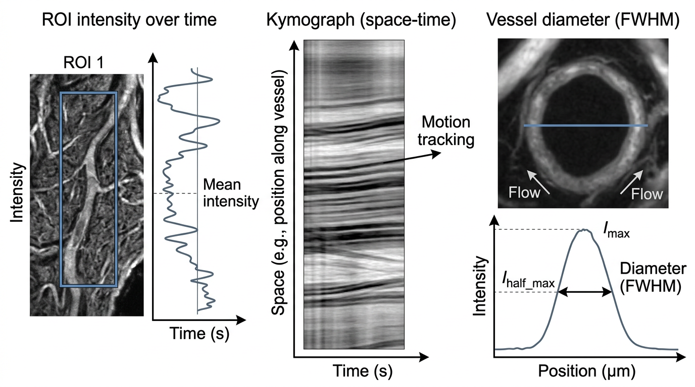

Pipeline
Imaging: ROI and line analysis
ROI Analysis measures regions or a line over time in a stack of coregistered frames, such as two-photon calcium or blood-flow imaging.
Methods
Using a ROI (one trace per ROI)
- Brightness: mean intensity in the ROI per frame. Movement: mean absolute frame-to-frame difference in the ROI. Both: the two on two axes.
- ΔF/F: (F − F0) / F0 of the ROI intensity, F0 = mean of the first N frames (default 30). ΔF/F is the usual measure for calcium indicators[10].
- Speed (flow): frame-to-frame motion magnitude in the ROI, a flow / speed proxy.
Using a line
- Kymograph: intensity along the line in every frame, as a position × time image. Along a vessel, slanted streaks come from moving blood cells and their slope is their speed, the idea behind line-scan velocity measurements[9].
- Vessel diameter: width at half level (FWHM, pixels) of the profile along a line drawn across the vessel, with walls located to sub-pixel precision. Robust diameter uses running-median background and lumen levels and a Hampel filter (7 frames, 3 robust SD) so that a blood cell crossing the line does not make the width jump.

IllustrationPreprocessing and tools
- Motion correction (rigid): every frame is aligned to the mean image by FFT phase correlation with a sub-pixel peak fit (two passes) and shifted back (bilinear). Translation only.
- Detect cells: local correlation image (mean correlation of each pixel with its 8 neighbours), an automatic threshold (median + 4 robust SD, at least 0.2), connected components of 20–1000 px that are not elongated, holes filled; cells numbered left to right.
- Several ROIs: drawn, detected or loaded from
roiMask/roiMasks; each has a name, colour and area. - Optional B&W 256 levels, Gaussian smoothing (sigma 2 px) and per-frame normalisation to 0–1 (not for Brightness or ΔF/F), applied in that order.
Walkthrough on the demo stacks
Inputs and outputs
In
.matwithstackorframes(H × W × N grayscale or H × W × 3 × N RGB; otherwise the first variable is used)- Optional in the .mat:
timeVecort(one time per frame),roiMask(logical H × W) orroiMasks(H × W × K, optionalroiNames), used as the first ROIs - Multi-frame TIFF: RGB frames are converted to grayscale (mean of the colour channels); time = frame index
Out
- .csv:
Timeplus one column per measure (Intensity, Movement, DFF, Speed; with several ROIs<measure>_<ROI name>), orDiameter_px(+Diameter_standard_px,Replacedwhen robust); for a kymograph, a matrix (first row = time) - .mat: struct
resultswith the series (one row per ROI),roiMasks/roiNames,roiMask(ROI 1),lineStart/lineEnd,motionCorrectionandshifts, and the preprocessing and diameter settings
Demo expectations
The two demo stacks are described on the demo data page. Expected results (from the in-app Help):
- Data:
demo_imaging.mat, 96 × 96 px, 150 frames at 10 Hz (15 s). A dark vertical vessel at x = 60 whose diameter oscillates 12 ± 3 px (9–15 px) every 5 s; a bright red blood cell moving down 2 px/frame (20 px/s); a cell at (24, 30), radius 6 px with calcium transients (ΔF/F ≈ 1) at 3, 7 and 11 s. The cell'sroiMaskis in the file. - The demo selects ΔF/F with that mask (baseline = first 30 frames) and a line across the vessel from (45, 70) to (75, 70).
- ΔF/F: flat ~0 until 3 s, then three peaks of ~0.2–0.3 at 3, 7 and 11 s, each decaying in ~1–2 s. (The simulated calcium signal has ΔF/F ≈ 1, but it is added on top of the tissue background inside the ROI, so the measured ΔF/F of the ROI is smaller.)
- Vessel diameter (same line): a sine between ~9 and ~15 px with a 5 s period. Kymograph along the vessel (e.g. from (60, 5) to (60, 90)): slanted streaks with a slope of 2 px per frame.
- Advanced demo (Try advanced demo (motion, 3 cells)): 96 × 96 px, 150 frames at 10 Hz. Every frame is shifted by up to ±3 px (smooth random walk); three cells: cell 1 at (22, 24) with events at 4, 8.5, 13 s, cell 2 at (26, 78) at 5.5, 10.5 s, cell 3 at (82, 30) at 7, 12 s; the vessel at x = 60 (12 ± 3 px, period 5 s) and a bright red blood cell that crosses the diameter line (35, 64)–(85, 64) about every 3 s.
- Motion correction: the Motion correction tab shows dy and dx following the dashed true shifts (error < 0.3 px), max shift ≈ 3 px.
- Show → Correlation image: the three cells are bright disks (correlation ≈ 0.9), the vessel a bright band; Detect cells adds exactly Cell 1–3 (the vessel is rejected as too elongated).
- ΔF/F (Run): three traces, each peaking only at its own cell's event times.
- Vessel diameter: without Robust diameter the trace jumps to ~50 px whenever the blood cell crosses the line; with Robust diameter it follows the 9–15 px sine (error < 2.5 px) and the replaced frames are circled.
Step-by-step instructions and troubleshooting: ROI Analysis in the guide.